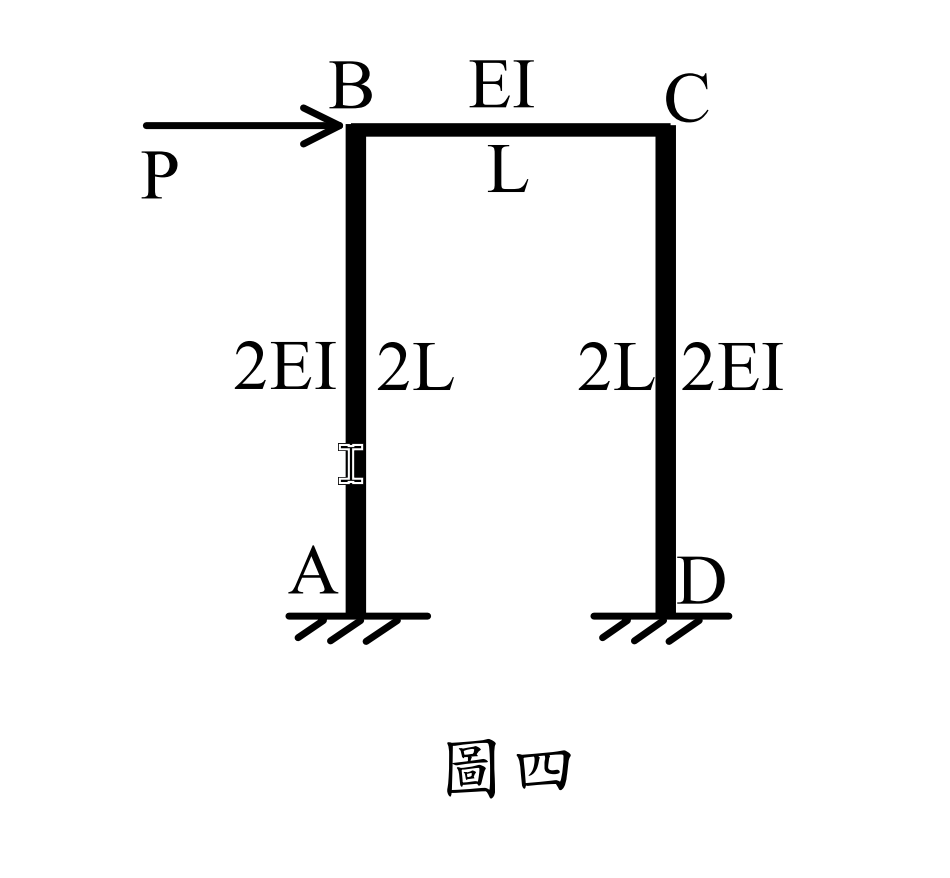

考題編號：SA-2024-4
主分類： SA-U2-3 靜不定結構分析
副分類： 無
分析法： 傾角變位法
標籤： 傾角變位法, 剛架, 側移, 集中力, 反對稱, 非均勻斷面
1. 原始題目重述 (Problem Restatement)
圖四為一剛架，A、D 皆為固定端，節點 B 承受一向右之集中力 $P$。請求出 B 點的水平位移及 C、D 節點的彎矩值。
（註：經確認幾何配置與剛度為，左柱 AB 長度 2L、剛度 $2EI$，右柱 CD 長度 2L、剛度 $2EI$，橫梁 BC 長度 L、剛度 $EI$）。

2. 考題核心精神與出題者意圖 (Core Concepts & Examiner's Intent)
本題是測試學生處理「有側移」剛架之傾角變位法，並且加入了「桿件 $EI$ 不同」的變化。核心測驗重點有二：
- 相對剛度的計算與反對稱變形之利用：雖然各桿件 $EI$ 與長度不同，但經過相對剛度 $K=EI/L$ 換算後，三根桿件的 $K$ 值完全相等。由於結構剛度對稱，且承受反對稱的集中側向力，可預知兩柱之變形模式相同，即 $\theta_B = \theta_C$。
- 層剪力方程式 (Shear Equation)：節點承受集中側向力時，固端彎矩 (FEM) 為零，所有的側向推力皆由層剪力平衡方程式來吸收。
3. 解題戰略地圖與陷阱分析 (Strategic Roadmap & Trap Analysis)
- 定義自由度與相對剛度：
- A, D 為固定端，$\theta_A = \theta_D = 0$。未知自由度為 $\theta_B, \theta_C, \psi$。
- 計算各桿剛度 $K_{AB} = \frac{2EI}{2L} = \frac{EI}{L}$，梁剛度 $K_{BC} = \frac{EI}{L}$。令 $K = \frac{EI}{L}$，則 $K_{AB} = K_{BC} = K_{CD} = K$。 - 判斷固端彎矩 (FEM)：
- 由於無桿件載重，僅有節點載重 $P$，故所有桿件之 $FEM = 0$。 - 建立三大平衡方程式：
- 節點 B 彎矩平衡：$\Sigma M_B = 0 \implies 4\theta_B + \theta_C - 3\psi = 0$
- 節點 C 彎矩平衡：$\Sigma M_C = 0 \implies \theta_B + 4\theta_C - 3\psi = 0$
- 層剪力平衡：取剛架水平力平衡導出 $M_{AB} + M_{BA} + M_{CD} + M_{DC} = 2PL$。 - 陷阱分析：
- EI 值陷阱：題目給的 $EI$ 不同，若未先化簡為相對剛度 $K$，會以為這是不對稱結構，導致算式冗長且易錯。
- 符號法則混淆：若約定弦旋轉逆時針為正 $\psi$，則向右位移 $\Delta$ 會造成順時針旋轉，代入公式 $\psi$ 必為負值。推導層剪力時必須嚴格遵守自己設定的符號法則。
3.5 變數層次分析 (Variable Hierarchy Analysis)
最終目標
求解 B 點水平位移與 C、D 節點的內部彎矩值
本題關鍵公式（依計算順序）
- 定義桿件相對剛度：$$K_{ij} = \frac{EI_{ij}}{L_{ij}}$$
- 傾角變位方程式（無固端彎矩）：$$M_{ij} = 2\boxed{K_{ij}} \left(2\theta_i + \theta_j - 3\psi\right)$$
- 節點彎矩平衡：$$\sum M_{node} = 0 \implies \boxed{M_{ij}} + \boxed{M_{ik}} = 0$$
- 層剪力平衡（由自由體圖推導）：$$\sum H_{col} = P \implies \frac{\sum \boxed{M_{col\_top}} + \sum \boxed{M_{col\_bot}}}{h} = P$$
- 水平側移換算：$$\Delta = -h \cdot \boxed{\psi}$$
L1：題目直接給定
- 符號 ∣ 數值 ∣ 說明
- $L_{AB}, L_{CD}$ ∣ $2L$ ∣ 左、右柱高度
- $L_{BC}$ ∣ $L$ ∣ 橫梁長度
- $EI_{AB}, EI_{CD}$ ∣ $2EI$ ∣ 左、右柱彎曲剛度
- $EI_{BC}$ ∣ $EI$ ∣ 橫梁彎曲剛度
- $P$ ∣ $P$ (向右) ∣ 節點 B 所受之側向集中力
L2：需知識點推導
剛度與方程式初始化
- 符號 ∣ 公式／來源 ∣ 卡關?
- $K_{AB}, K_{CD}$ ∣ $\frac{2EI}{2L} = \frac{EI}{L} = K$ ∣
- $K_{BC}$ ∣ $\frac{EI}{L} = K$ ∣
- $FEM$ ∣ $0$ (無構件載重) ∣
聯立求解參數
- 符號 ∣ 公式／來源 ∣ 卡關?
- $\theta_B, \theta_C$ ∣ 節點力矩平衡 $\Sigma M = 0$ 且利用反對稱性 $\theta_B = \theta_C$ ∣
- $\psi$ ∣ 層剪力方程式 $\Sigma F_x = 0$ ∣
最終目標運算
- 符號 ∣ 公式／來源 ∣ 卡關?
- $\Delta_B$ ∣ $\Delta_B = -2L \cdot \psi$ ∣
- $M_C, M_D$ ∣ 傾角變位公式代回 $\theta, \psi$ 值 ∣
L3：深層知識（不懂就卡住）
- 知識點 ∣ 說明 ∣ 卡關?
- 反對稱變形 ∣ 剛架對稱但受反對稱側向力時，兩柱變形模式相同，必然發生 $\theta_B = \theta_C$，可直接使用此條件減少未知數。 ∣
- 層剪力方程式與符號法則 ∣ 若約定逆時針弦旋轉為正 $\psi$，則向右位移會導致 $\psi < 0$。推導層剪力需從自由體圖確實取力矩平衡，避免正負號錯亂導致算錯位移方向。 ∣
4. 步驟化詳細計算過程 (Step-by-Step Detailed Calculation)
Step 1: 參數設定與傾角變位方程式
未知數：$\theta_B, \theta_C, \psi$。
令 $\psi = -\frac{\Delta_B}{2L}$ （約定逆時針弦旋轉為正，向右位移 $\Delta_B$ 會造成順時針弦旋轉，故加負號）。
由前述推導，$K_{AB} = K_{BC} = K_{CD} = K = \frac{EI}{L}$。所有 $FEM = 0$。
$$ M_{AB} = 2K(\theta_B - 3\psi) $$
$$ M_{BA} = 2K(2\theta_B - 3\psi) $$
$$ M_{BC} = 2K(2\theta_B + \theta_C) $$
$$ M_{CB} = 2K(2\theta_C + \theta_B) $$
$$ M_{CD} = 2K(2\theta_C - 3\psi) $$
$$ M_{DC} = 2K(\theta_C - 3\psi) $$
Step 2: 建立節點平衡方程式
節點 B ($\Sigma M_B = 0$)：
$$ M_{BA} + M_{BC} = 0 \implies 2K(2\theta_B - 3\psi) + 2K(2\theta_B + \theta_C) = 0 $$
同除 2K，得：
$$ 4\theta_B + \theta_C - 3\psi = 0 \quad \text{--- (式 1)} $$
節點 C ($\Sigma M_C = 0$)：
$$ M_{CB} + M_{CD} = 0 \implies 2K(2\theta_C + \theta_B) + 2K(2\theta_C - 3\psi) = 0 $$
同除 2K，得：
$$ \theta_B + 4\theta_C - 3\psi = 0 \quad \text{--- (式 2)} $$
(註：由式 1 與式 2 可直接觀察出 $\theta_B = \theta_C$，此即反對稱載重作用於對稱剛度結構之必然結果)
代入 $\theta_C = \theta_B$ 至式 1：
$$ 5\theta_B - 3\psi = 0 \implies \theta_B = \frac{3}{5}\psi \quad \text{--- (式 A)} $$
Step 3: 建立層剪力平衡方程式
取整棟剛架（含梁）為自由體，柱底剪力分別為 $H_A, H_D$（假設向左以平衡向右之 $P$）。
- $H_A(2L) = M_{AB} + M_{BA} \implies H_A = \frac{M_{AB} + M_{BA}}{2L}$
- $H_D(2L) = M_{CD} + M_{DC} \implies H_D = \frac{M_{CD} + M_{DC}}{2L}$
- 水平力平衡：$H_A + H_D = P \implies \frac{M_{AB} + M_{BA}}{2L} + \frac{M_{CD} + M_{DC}}{2L} = P$
$$ M_{AB} + M_{BA} + M_{CD} + M_{DC} = 2PL $$
將傾角方程式代入：
$$ 2K(\theta_B - 3\psi + 2\theta_B - 3\psi + 2\theta_C - 3\psi + \theta_C - 3\psi) = 2PL $$
$$ 2K(3\theta_B + 3\theta_C - 12\psi) = 2PL \implies 3K(\theta_B + \theta_C - 4\psi) = PL $$
$$ \theta_B + \theta_C - 4\psi = \frac{PL}{3K} \quad \text{--- (式 3)} $$
Step 4: 聯立求解
將 $\theta_C = \theta_B = \frac{3}{5}\psi$ 代入式 3：
$$ \frac{3}{5}\psi + \frac{3}{5}\psi - 4\psi = \frac{PL}{3K} $$
$$ \left( 1.2 - 4 \right)\psi = \frac{PL}{3K} \implies -2.8\psi = \frac{PL}{3K} \implies -\frac{14}{5}\psi = \frac{PL}{3K} $$
$$ \psi = -\frac{5}{42}\frac{PL}{K} $$
再解得：
$$ \theta_B = \theta_C = \frac{3}{5} \left( -\frac{5}{42}\frac{PL}{K} \right) = -\frac{3}{42}\frac{PL}{K} = -\frac{1}{14}\frac{PL}{K} $$
Step 5: 計算最終要求之位移與彎矩
B 點水平位移 ($\Delta_B$)：
根據約定 $\psi = -\frac{\Delta_B}{2L}$，故 $\Delta_B = -2L\psi$。
$$ \Delta_B = -2L \left( -\frac{5}{42}\frac{PL}{K} \right) = \frac{10}{42}\frac{PL^2}{K} = \frac{5}{21}\frac{PL^2}{K} $$
將 $K = \frac{EI}{L}$ 代回：
$$ \boxed{ \Delta_B = \frac{5}{21} \frac{PL^3}{EI} \quad \text{(向右)} } $$
C 點彎矩 ($M_{CD}, M_{CB}$)：
$$ \boxed{ M_{CD} = 2K(2\theta_C - 3\psi) = 2K \left( 2\left(-\frac{3}{42}\right) - 3\left(-\frac{5}{42}\right) \right)\frac{PL}{K} = 2 \left( \frac{-6 + 15}{42} \right)PL = \frac{18}{42}PL = \frac{3}{7}PL \quad \text{(逆時針)} } $$
$$ M_{CB} = 2K(2\theta_C + \theta_B) = 2K \left( 3\left(-\frac{3}{42}\right) \right)\frac{PL}{K} = -\frac{18}{42}PL = -\frac{3}{7}PL \quad \text{(順時針)} $$
(驗算 $M_{CB} + M_{CD} = 0$，符合節點平衡)
D 點彎矩 ($M_{DC}$)：
$$ \boxed{ M_{DC} = 2K(\theta_C - 3\psi) = 2K \left( -\frac{3}{42} - 3\left(-\frac{5}{42}\right) \right)\frac{PL}{K} = 2 \left( \frac{-3 + 15}{42} \right)PL = \frac{24}{42}PL = \frac{4}{7}PL \quad \text{(逆時針)} } $$
5. 關鍵爭議點與進階探討 (Critical Issues & Advanced Discussion)
- 剛度巧合：出題者特意將柱子設定為 $2L$ 高、$2EI$ 剛度，梁設定為 $L$ 長、$EI$ 剛度。這讓三段桿件的相對剛度 $K$ 完全相等，這是標準的「放水」設計，用來獎勵有先觀察整體結構剛度的考生，能極大化地減少計算量。
- 單位與參數：本解析以通用代數 $P$ 求解。若題目圖面有給定具體數值（例如 $P = 10\text{tf}$），直接代入 $P$ 即可獲得精確值。